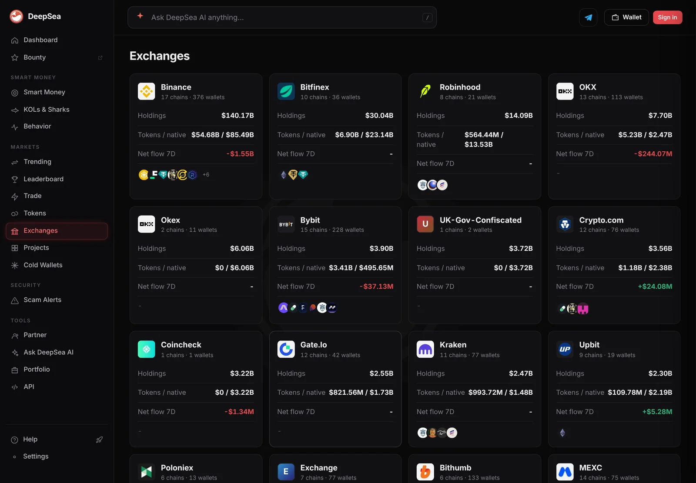
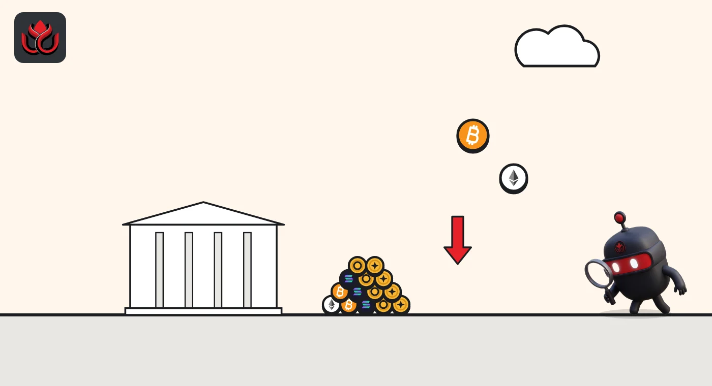

Exchange wallets lost $11.45 billion in 18 hours. Mostly price, not withdrawals
DeepSea's exchange list shrank 4.7% as bitcoin fell about 6%. Binance's holdings dropped $6.84 billion, and MEXC fell 15.8%, the steepest among large exchanges.
Key points
- The 82 entries on DeepSea's Exchanges page held $233.97 billion at 12:35 a.m. ET on November 6, down from $245.42 billion at 6:31 a.m. ET on November 5.
- Native coins such as bitcoin and ether fell 6.2% in value, close to bitcoin's 5.8% drop on CoinGecko. Other tokens fell only 1.7%.
- MEXC dropped from $1.09 billion to $918.21 million, with its token balance down 17.3%.
 What DeepSea's data shows
What DeepSea's data shows
DeepSea's Exchanges page adds up the balances of wallets it has labeled with an exchange or owner, split into native coins (a chain's own coin, such as bitcoin) and other tokens. LC Insight compared the page at 6:31 a.m. ET on November 5 with a read at 12:35 a.m. ET on November 6 and added up all 82 entries.
The total fell from $245.42 billion to $233.97 billion, minus $11.45 billion or 4.7%. Native coins fell from $162.75 billion to $152.70 billion (minus 6.2%). Tokens fell from $82.69 billion to $81.30 billion (minus 1.7%), which fits stablecoins holding their dollar value.
Binance went from $147.01 billion to $140.17 billion, its native coins down 6.1%. Bitfinex fell 3.9% to $30.04 billion and Robinhood 6.1% to $14.09 billion. The 7-day net flow figures on the page did not change between the two reads (Binance still minus $1.55 billion), so they do not explain the drop.

Data: DeepSea (desea.io), checked November 6, 2026, 12:35 a.m. ET.
Who fell most
Among exchanges holding more than $500 million, MEXC fell the most, 15.8%, to $918.21 million. Its native coins fell 6.0%, in line with prices, but its tokens fell 17.3%, from $910.76 million to $753.52 million. That is a bigger drop than prices explain, though DeepSea does not show which tokens left. Coinbase's labeled wallets fell 10.3% to $284.92 million, and Upbit 7.3% to $2.30 billion. A few balances rose, such as Copper, up from $85.00 million to $127.77 million.
Change in DeepSea exchange holdings, November 5 to 6
% change
November 5, 2026, 6:31 a.m. ET vs. November 6, 12:35 a.m. ET. LC Insight calculation. Source: DeepSea Exchanges.
A check on one wallet
On Etherscan, the address labeled Binance: Cold Wallet 20 holds 166,771 ETH, worth $370.63 million at $2,222.41 per ether. At $2,416.90, ether's price on the morning of November 5, the same 166,771 ETH would have been worth about $403.07 million. Its last transaction was on November 5 at 9:03 a.m. ET. The coins stayed put; only their dollar value changed.
Over the same window, bitcoin slid 5.8% on CoinGecko, from roughly $80,200 (6 a.m. ET, November 5) to $75,552 (12:46 a.m. ET, November 6). Ether dropped 8.1%, from about $2,417 to $2,221.

LC Insight analysis
This section is our reading of the facts above, not a statement of fact.
- We think most of the $11.45 billion is a price effect: native coin balances fell about as much as bitcoin did, and stablecoin-heavy token balances barely moved.
- MEXC is the exception worth watching. Its token balance fell far more than prices, which can mean withdrawals or wallet changes, and the data here cannot tell which.
- DeepSea's totals cover only wallets it has labeled, so they are a partial view of any exchange's reserves.
What's next
- MEXC's token balance and its next 7-day flow figure
- Whether DeepSea's 7-day net flows update to show crash-day moves
- Binance Cold Wallet 20, quiet since November 5
Disclaimer. This article is based on public information and the sources listed below as of the update time shown. It is for information only and is not investment, legal or tax advice. Figures may change as companies and authorities publish new data.
Sources
- DeepSea, Exchanges page (read November 5, 2026, 6:31 a.m. ET and November 6, 2026, 12:35 a.m. ET)
- Etherscan, Binance: Cold Wallet 20 address page (read November 6, 2026, about 1:00 a.m. ET)
- CoinGecko, Bitcoin (BTC) price history (November 5 to 6, 2026)
- CoinGecko, Ethereum (ETH) price history (November 5 to 6, 2026)